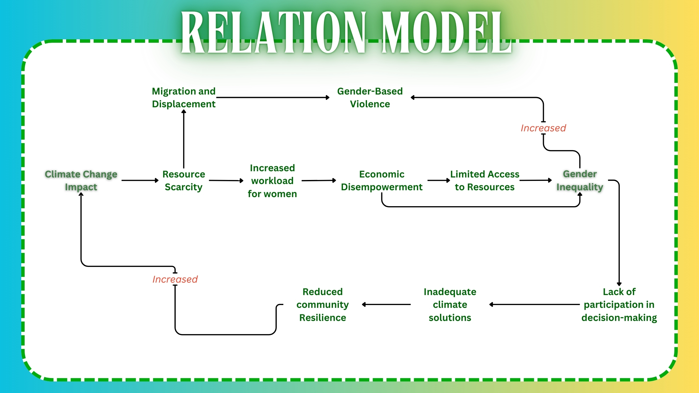

The diagram below highlights the cyclical relationship between climate change and gender inequality, showing how these two issues reinforce each other. As climate change worsens, it disproportionately affects women, especially in vulnerable communities, due to their unequal access to resources and decision-making power. This deepens existing gender inequalities, making it harder for women to adapt or contribute to climate solutions. In turn, the exclusion of women from climate action weakens community resilience and leads to less effective responses to climate change. Without addressing both challenges simultaneously, this cycle will continue, exacerbating both the environmental crisis and social inequalities.

However, women have the potential to be powerful agents of change in breaking this cycle. In many regions, women are responsible for managing key natural resources such as water, food, and energy, and they possess valuable traditional knowledge about sustainable practices. Women produce between 60-80% of the world’s food, particularly in developing regions, making them key leaders in climate adaptation strategies like sustainable agriculture.
In the progress chart for Goal 5: Gender Equality, global efforts towards achieving gender equality are facing significant setbacks. The chart highlights areas of stagnation and regression, marked in orange and red, respectively. Some of the key observations include:
This visualization underlines the need for stronger policy actions, better implementation, and more funding for initiatives aimed at closing the gender gap.
The chart for Goal 13: Climate Action similarly reveals marginal progress and regression across many regions. Climate mitigation efforts are lagging in many areas, as demonstrated by the following:
The data on both Goal 5 and Goal 13 reveal a troubling connection between gender inequality and climate inaction, highlighting the global challenges in addressing these two critical Sustainable Development Goals (SDGs).
Why it's a gap: The impacts of climate change and gender inequality differ significantly across regions due to cultural, economic, and environmental factors. While there is substantial research focused on South Asia and sub-Saharan Africa, other regions, such as Latin America, the Middle East, and small island nations, remain underrepresented in the data. This gap in knowledge limits the development of targeted solutions for these areas, as the global understanding of the gender-climate relationship is incomplete without region-specific insights.
How Green Equality addresses it: Green Equality will help close this gap by implementing locally tailored initiatives in underrepresented regions. By collaborating with local organizations and drawing on women’s expertise in resource management, the project will develop solutions that meet the unique challenges of these communities. Each initiative will be documented to create a blueprint of adaptable models that can be replicated in similar regions, helping to expand the knowledge base for climate action and gender equality across diverse areas.
Why it's a gap: There is a significant lack of long-term studies tracking how climate change affects women’s roles, resilience, and leadership over time. Most studies focus on short-term results, leaving an incomplete understanding of how women’s empowerment in climate action evolves or sustains itself. Without this long-term data, it's challenging to determine if the solutions being implemented for gender-inclusive climate resilience are truly effective and sustainable in the long run.
How Green Equality addresses it: Green Equality will function as a living archive that continuously collects data, stories, and outcomes from climate and gender-focused projects. This repository won't rely solely on traditional longitudinal studies but will act as a growing resource, updated regularly to reflect new findings and success stories. By offering updated data and insights, Green Equality will support ongoing research and policy development, allowing for timely adaptations to ensure long-term impact. This approach ensures the initiatives are not static and can evolve based on emerging trends and long-term observations.